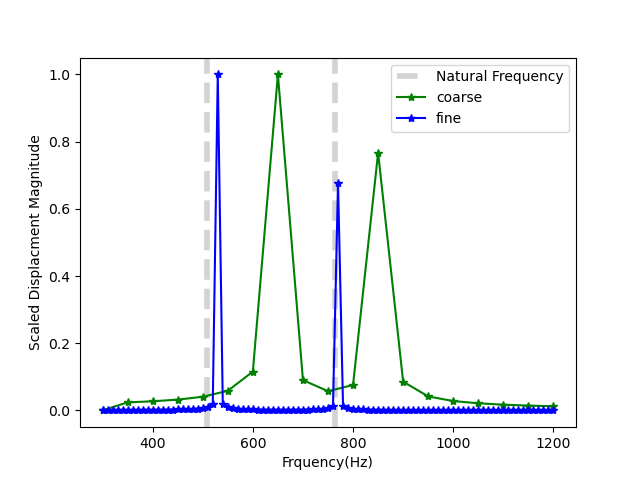

Frequency Domain Analysis
The MOOSE Solid Mechanics module performs frequency domain analysis using modal analysis and frequency response functions. The following example will go through both options.
Modal Analysis
Modal analysis is a technique used in structural dynamics to determine the natural frequencies (eigenvalues) and mode shapes (eigenvectors) of a structure. The natural frequencies represent the frequencies at which the structure tends to vibrate when subjected to a disturbance, while the mode shapes describe the corresponding deformed shape of the structure at each natural frequency. Modal analysis provides valuable insights into the dynamic behavior of a structure and is often used for design, optimization, and troubleshooting purposes.
The general eigenvalue problem that needs to be solved for modal analysis is given by: where holds the "noneigen" kernels, holds the "eigen" kernels, are the natural frequencies, and are the mode shapes. In MOOSE, modal analysis is set up using the Eigenvalue Executioner. The Eigenvalue System allows you to define which kernels go into which matrix. It's important to note that in modal analysis, Neumann boundary conditions are ignored since we are interested in the free vibration response of the structure. Only Dirichlet boundary conditions are considered.
To demonstrate modal analysis in MOOSE, we will visit the cantilever beam example that will be discussed in more detail in the next section on frequency response functions. The goal here is to calculate the first few natural frequencies and visualize the corresponding mode shapes of the cantilever beam. The strong form for the modal analysis of the cantilever beam is: This equation represents the generalized eigenvalue problem for modal analysis. The terms on the left side, which involve the stress divergence, will contribute to the "A" matrix, and the terms on the right side, which are the mass terms, will contribute to the "B" matrix.
Cantilever Beam Example
The cantilever beam shown in Figure 1 is subjected to a time harmonic force on the right side in the out-of-plane and vertical directions. In this example the frequency of the time varying load is swept over a range. The displacement at the midpoint of the beam is recorded at each frequency. This type of output, displacement as a function of frequency, is a frequency response function (FRF) or transfer function. Frequencies corresponding to the displacement peaks in the FRF indicate natural frequencies/modes.

Figure 1: 2D cantilever problem with a prescribed displacement boundary condition on the right end.
The analytic solution for the free vibration of a cantilever is known, see Euler Bernoulli beam. The analytic eigenvalues, , are given by where is the moment of inertia, the cross sectional area, the beam length, and are the wave numbers. For a cantilever beam, the first three wave numbers, , given for the Euler Bernoulli beam dimensions given as the dimensions of the cantilever beam are 1m with cross section dimensions 0.1m and 0.15m are
The moment of inertia for a rectangular cross section beam is , where is the dimension in the direction being loaded and is the other cross sectional dimension.
For an aluminum cantilever beam, 68e9 Pa, 0.36, 27.e3 kg/m. The analytic first and second natural frequencies for this system bending in directions tangential to the beam axis are:
509Hz
763Hz
Both of these frequencies use the same value of , but with the moment of inertia recomputed for bending about the different widths, where the lower frequency is the first bending mode about the thin direction (0.1m) and the next higher frequency is the first bending mode about the thicker direction (0.15m).
Modal Analysis: Cantilever Beam Example
In the Kernels block, we define the kernels that contribute to the "A" and "B" matrices in the eigenvalue problem. The StressDivergenceTensor kernels represent the stress divergence terms and contribute to the "A" matrix. The ADCoefReaction kernels represent the mass terms and contribute to the "B" matrix. The "coefficient" in CoefReaction / ADCoefReaction is set to a negative value which corresponds to a positive density. The extra_vector_tags = 'eigen' parameter is used to indicate that these kernels contribute to "B" matrix. In other literature the A matrix would be the stiffness matrix (K) and B would be the Mass matrix (M).
Listing 1:
[Kernels<<<{"href": "../../syntax/Kernels/index.html"}>>>]
[mass_x]
type = ADCoefReaction<<<{"description": "Implements the residual term (p*u, test)", "href": "../../source/kernels/CoefReaction.html"}>>>
variable<<<{"description": "The name of the variable that this residual object operates on"}>>> = disp_x
extra_vector_tags<<<{"description": "The extra tags for the vectors this Kernel should fill"}>>> = 'eigen'
coefficient<<<{"description": "Coefficient of the term"}>>> = -2.7e3
[]
[mass_y]
type = ADCoefReaction<<<{"description": "Implements the residual term (p*u, test)", "href": "../../source/kernels/CoefReaction.html"}>>>
variable<<<{"description": "The name of the variable that this residual object operates on"}>>> = disp_y
extra_vector_tags<<<{"description": "The extra tags for the vectors this Kernel should fill"}>>> = 'eigen'
coefficient<<<{"description": "Coefficient of the term"}>>> = -2.7e3
[]
[mass_z]
type = ADCoefReaction<<<{"description": "Implements the residual term (p*u, test)", "href": "../../source/kernels/CoefReaction.html"}>>>
variable<<<{"description": "The name of the variable that this residual object operates on"}>>> = disp_z
extra_vector_tags<<<{"description": "The extra tags for the vectors this Kernel should fill"}>>> = 'eigen'
coefficient<<<{"description": "Coefficient of the term"}>>> = -2.7e3
[]
[stiffness_x]
type = StressDivergenceTensors<<<{"description": "Stress divergence kernel for the Cartesian coordinate system", "href": "../../source/kernels/StressDivergenceTensors.html"}>>>
variable<<<{"description": "The name of the variable that this residual object operates on"}>>> = disp_x
component<<<{"description": "An integer corresponding to the direction the variable this kernel acts in. (0 for x, 1 for y, 2 for z)"}>>> = 0
[]
[stiffness_y]
type = StressDivergenceTensors<<<{"description": "Stress divergence kernel for the Cartesian coordinate system", "href": "../../source/kernels/StressDivergenceTensors.html"}>>>
variable<<<{"description": "The name of the variable that this residual object operates on"}>>> = disp_y
component<<<{"description": "An integer corresponding to the direction the variable this kernel acts in. (0 for x, 1 for y, 2 for z)"}>>> = 1
[]
[stiffness_z]
type = StressDivergenceTensors<<<{"description": "Stress divergence kernel for the Cartesian coordinate system", "href": "../../source/kernels/StressDivergenceTensors.html"}>>>
variable<<<{"description": "The name of the variable that this residual object operates on"}>>> = disp_z
component<<<{"description": "An integer corresponding to the direction the variable this kernel acts in. (0 for x, 1 for y, 2 for z)"}>>> = 2
[]
[]The BCs block defines the boundary conditions for the problem. In this example, we have Dirichlet boundary conditions applied to the left boundary for all displacement components. The DirichletBC is used for the "A" matrix, while the EigenDirichletBC is used for the "B" matrix. Where ever a DirichletBC is used, an EigenDirichletBC should be set also.
Listing 2: BCs for
[BCs<<<{"href": "../../syntax/BCs/index.html"}>>>]
[dirichlet_x]
type = DirichletBC<<<{"description": "Imposes the essential boundary condition $u=g$, where $g$ is a constant, controllable value.", "href": "../../source/bcs/DirichletBC.html"}>>>
variable<<<{"description": "The name of the variable that this residual object operates on"}>>> = disp_x
value<<<{"description": "Value of the BC"}>>> = 0
boundary<<<{"description": "The list of boundary IDs from the mesh where this object applies"}>>> = 'left'
[]
[dirichlet_y]
type = DirichletBC<<<{"description": "Imposes the essential boundary condition $u=g$, where $g$ is a constant, controllable value.", "href": "../../source/bcs/DirichletBC.html"}>>>
variable<<<{"description": "The name of the variable that this residual object operates on"}>>> = disp_y
value<<<{"description": "Value of the BC"}>>> = 0
boundary<<<{"description": "The list of boundary IDs from the mesh where this object applies"}>>> = 'left'
[]
[dirichlet_z]
type = DirichletBC<<<{"description": "Imposes the essential boundary condition $u=g$, where $g$ is a constant, controllable value.", "href": "../../source/bcs/DirichletBC.html"}>>>
variable<<<{"description": "The name of the variable that this residual object operates on"}>>> = disp_z
value<<<{"description": "Value of the BC"}>>> = 0
boundary<<<{"description": "The list of boundary IDs from the mesh where this object applies"}>>> = 'left'
[]
[dirichlet_x_e]
type = EigenDirichletBC<<<{"description": "Dirichlet BC for eigenvalue solvers", "href": "../../source/bcs/EigenDirichletBC.html"}>>>
variable<<<{"description": "The name of the variable that this residual object operates on"}>>> = disp_x
boundary<<<{"description": "The list of boundary IDs from the mesh where this object applies"}>>> = 'left'
[]
[dirichlet_y_e]
type = EigenDirichletBC<<<{"description": "Dirichlet BC for eigenvalue solvers", "href": "../../source/bcs/EigenDirichletBC.html"}>>>
variable<<<{"description": "The name of the variable that this residual object operates on"}>>> = disp_y
boundary<<<{"description": "The list of boundary IDs from the mesh where this object applies"}>>> = 'left'
[]
[dirichlet_z_e]
type = EigenDirichletBC<<<{"description": "Dirichlet BC for eigenvalue solvers", "href": "../../source/bcs/EigenDirichletBC.html"}>>>
variable<<<{"description": "The name of the variable that this residual object operates on"}>>> = disp_z
boundary<<<{"description": "The list of boundary IDs from the mesh where this object applies"}>>> = 'left'
[]
[]The Executioner block specifies the eigenvalue solver settings. The type =
Eigenvalue indicates that we are solving an eigenvalue problem. Since we are solving a linear eigenvalue problem we can use a "solve_type" that can get multiple eigenvalues at once, in this case that is KRYLOVSCHUR. The "which_eigen_pairs" parameter determines which eigenvalues to compute and for modal analysis the smallest eigenvalues are usually of interest. The "n_eigen_pairs" parameter sets the number of eigenvalue pairs to compute.
Listing 3:
[Executioner<<<{"href": "../../syntax/Executioner/index.html"}>>>]
type = Eigenvalue
solve_type = KRYLOVSCHUR
which_eigen_pairs = SMALLEST_MAGNITUDE
n_eigen_pairs = 2
n_basis_vectors = 5
petsc_options = '-eps_monitor_all -eps_view'
petsc_options_iname = '-st_type -eps_target -st_pc_type -st_pc_factor_mat_solver_type'
petsc_options_value = 'sinvert 0 lu mumps'
eigen_tol = 1e-8
[]To output all the eigenvalues solved in the system we can use the Eigenvalues vectorpostprocessor. While we have solved for the two smallest eigenvalues, currently MOOSE only has the ability to output a single eigenvector. To change which eigenvector is outputted adjust the index in "active_eigen_index" and rerun the simulation.
[VectorPostprocessors<<<{"href": "../../syntax/VectorPostprocessors/index.html"}>>>]
[omega_squared]
type = Eigenvalues<<<{"description": "Returns the Eigen values from the nonlinear Eigen system.", "href": "../../source/vectorpostprocessors/Eigenvalues.html"}>>>
execute_on<<<{"description": "The list of flag(s) indicating when this object should be executed. For a description of each flag, see https://mooseframework.inl.gov/source/interfaces/SetupInterface.html."}>>> = TIMESTEP_END
[]
[]
[Problem<<<{"href": "../../syntax/Problem/index.html"}>>>]
type = EigenProblem
active_eigen_index = ${index}
[]For this coarse mesh example, we were able to determine the first two 's: 645.1 Hz and 855 Hz. Which are close to the theoretical result of 509 Hz and 763 Hz, and as the mesh is refined the results would converge on to the true solutions. The results are similar to the frequency response function as long as the sweeps are granular enough. The second mode is visualized in Figure 2, and the outline of the undeformed state is shown in black.
Figure 2: Cantilever Beam: Mode 2
Frequency Response Function
The following example presents two frequency domain analysis of a cantilever beam done in the MOOSE Solid Mechanics module. The first example computes a frequency response function of the cantilever beam and identifies the first two eigenvalues of beam. The second analysis computes the dynamic response at a single frequency (time-harmonic problem). A frequency domain analysis provides the structural response at a discrete set of frequencies. At each frequency, an independent steady state simulation is performed. This document provides an example of modeling a dynamic problem at a single frequency (time-harmonic problem).
Frequency domain analysis is often used to determine a frequency response function (FRF). An FRF describes the relationship between an input (frequency and amplitude of the input forcing source) and output (displacement response of a system). For simple systems, an analytic FRF can be derived. For more complex systems, the FRF is numerically obtained by determining the system response over a range of frequencies. The frequencies corresponding to the peaks on the FRF plot indicate natural frequencies of the system (eigen/fundamental frequencies). The mode shape (eigenvector) is given by the displacement profile at a natural frequency.
Other applications of frequency domain dynamics are: (1) computation of band structure (dispersion curves) of lattices/metamaterial, (2) inverse design for vibration control, e.g. design a system so that it has as minimum/maximum response at particular frequency, (3) material properties inversion/optimization given discrete responses.
Frequency domain analyses can be advantageous over its time domain counterpart in several cases, for example, when the frequency spectrum of a signal consists of a few frequencies, or, when it is needed to have a better control of the numerical dispersion.
Problem Description
The equations of motion for a one dimensional isotropic elastic solid is given by the following partial differential equation: (1) where is the modulus of elasticity, and is the density. To convert to the frequency domain, we consider that a plane wave given by (2) is a solution to Eq. (1) where is in general a complex number depending on the boundary conditions, is the wave number, where is the frequency, and . By assuming Eq. (2) is a solution to Eq. (1), we can solve Eq. (1) in the frequency domain by taking a Fourier transform of to get . The frequency domain version of Eq. (1) is the Helmholtz equation given by (3) Eq. (3) is easily solved in MOOSE where is the state variable. The first term on the right hand side is still captured by the Stress Divergence Tensors kernel. The second RHS term, , is captured by the Reaction kernel where the Reaction rate is given by . Eq. (3) is only valid for small displacements and linear elasticity. A damping term can also be included in Eq. (1) and Eq. (3).
The boundary conditions also need to be converted to the frequency domain through a Fourier transform. A time harmonic Neumann BC given by (4) with amplitude and frequency , is transformed to (5)
The simulated natural frequencies given by peaks in the FRF for a coarse mesh are:
650Hz
850Hz
where 50Hz frequency increments are used in the FRF frequency sweep. The FRF where each displacement is plotted separately is shown in Figure 4 where each mode is excited separately. A scaled displacement magnitude is shown in Figure 3 for a coarse and fine mesh. A coarse mesh shows a stiffer response and and the natural frequencies are over-estimated. The natural frequencies converge on the analytic result from above as the mesh is refined. The simulations will fail if they are run at the natural frequencies because the solution will become singular, i.e the displacements blow-up as shown by the asymptotes in Figure 4.

Figure 3: Cantilever beam displacement magnitude for coarse mesh (0.1m elements) and fine mesh (0.033m elements). Analytic results are shown in grey.

Figure 4: Cantilever beam y- and z-displacements for the fine mesh (0.033m elements). Analytic results are shown in grey.
The input file for the coarse simulation shown in Figure 3 and Figure 4 is given in Listing 4.
Listing 4:
# Frequency Response function for cantilever beam:
# Analytic results: 509Hz and 763Hz
# Simulation results with coarse mesh: 600Hz and 800Hz
[Mesh<<<{"href": "../../syntax/Mesh/index.html"}>>>]
type = GeneratedMesh
elem_type = HEX8
dim = 3
xmin=0
xmax=1
nx=10
ymin=0
ymax=0.1
ny = 1
zmin=0
zmax=0.15
nz = 2
[]
[GlobalParams<<<{"href": "../../syntax/GlobalParams/index.html"}>>>]
order = FIRST
family = LAGRANGE
displacements = 'disp_x disp_y disp_z'
[]
[Problem<<<{"href": "../../syntax/Problem/index.html"}>>>]
type = ReferenceResidualProblem
reference_vector = 'ref'
extra_tag_vectors = 'ref'
group_variables = 'disp_x disp_y disp_z'
[]
[Physics<<<{"href": "../../syntax/Physics/index.html"}>>>]
[SolidMechanics<<<{"href": "../../syntax/Physics/SolidMechanics/index.html"}>>>]
[QuasiStatic<<<{"href": "../../syntax/Physics/SolidMechanics/QuasiStatic/index.html"}>>>]
[all]
strain<<<{"description": "Strain formulation"}>>> = SMALL
add_variables<<<{"description": "Add the displacement variables"}>>> = true
new_system<<<{"description": "If true use the new LagrangianStressDiverence kernels."}>>> = true
formulation<<<{"description": "Select between the total Lagrangian (TOTAL) and updated Lagrangian (UPDATED) formulations for the new kernel system."}>>> = TOTAL
[]
[]
[]
[]
[Kernels<<<{"href": "../../syntax/Kernels/index.html"}>>>]
#reaction terms
[reaction_realx]
type = Reaction<<<{"description": "Implements a simple consuming reaction term with weak form $(\\psi_i, \\lambda u_h)$.", "href": "../../source/kernels/Reaction.html"}>>>
variable<<<{"description": "The name of the variable that this residual object operates on"}>>> = disp_x
rate<<<{"description": "The $(\\lambda)$ multiplier, the relative amount consumed per unit time."}>>> = 0# filled by controller
extra_vector_tags<<<{"description": "The extra tags for the vectors this Kernel should fill"}>>> = 'ref'
[]
[reaction_realy]
type = Reaction<<<{"description": "Implements a simple consuming reaction term with weak form $(\\psi_i, \\lambda u_h)$.", "href": "../../source/kernels/Reaction.html"}>>>
variable<<<{"description": "The name of the variable that this residual object operates on"}>>> = disp_y
rate<<<{"description": "The $(\\lambda)$ multiplier, the relative amount consumed per unit time."}>>> = 0# filled by controller
extra_vector_tags<<<{"description": "The extra tags for the vectors this Kernel should fill"}>>> = 'ref'
[]
[reaction_realz]
type = Reaction<<<{"description": "Implements a simple consuming reaction term with weak form $(\\psi_i, \\lambda u_h)$.", "href": "../../source/kernels/Reaction.html"}>>>
variable<<<{"description": "The name of the variable that this residual object operates on"}>>> = disp_z
rate<<<{"description": "The $(\\lambda)$ multiplier, the relative amount consumed per unit time."}>>> = 0# filled by controller
extra_vector_tags<<<{"description": "The extra tags for the vectors this Kernel should fill"}>>> = 'ref'
[]
[]
[AuxVariables<<<{"href": "../../syntax/AuxVariables/index.html"}>>>]
[disp_mag]
[]
[]
[AuxKernels<<<{"href": "../../syntax/AuxKernels/index.html"}>>>]
[disp_mag]
type = ParsedAux<<<{"description": "Sets a field variable value to the evaluation of a parsed expression.", "href": "../../source/auxkernels/ParsedAux.html"}>>>
variable<<<{"description": "The name of the variable that this object applies to"}>>> = disp_mag
coupled_variables<<<{"description": "Vector of coupled variable names"}>>> = 'disp_x disp_y disp_z'
expression<<<{"description": "Parsed function expression to compute"}>>> = 'sqrt(disp_x^2+disp_y^2+disp_z^2)'
[]
[]
[BCs<<<{"href": "../../syntax/BCs/index.html"}>>>]
#Left
[disp_x_left]
type = DirichletBC<<<{"description": "Imposes the essential boundary condition $u=g$, where $g$ is a constant, controllable value.", "href": "../../source/bcs/DirichletBC.html"}>>>
variable<<<{"description": "The name of the variable that this residual object operates on"}>>> = disp_x
boundary<<<{"description": "The list of boundary IDs from the mesh where this object applies"}>>> = 'left'
value<<<{"description": "Value of the BC"}>>> = 0.0
[]
[disp_y_left]
type = DirichletBC<<<{"description": "Imposes the essential boundary condition $u=g$, where $g$ is a constant, controllable value.", "href": "../../source/bcs/DirichletBC.html"}>>>
variable<<<{"description": "The name of the variable that this residual object operates on"}>>> = disp_y
boundary<<<{"description": "The list of boundary IDs from the mesh where this object applies"}>>> = 'left'
value<<<{"description": "Value of the BC"}>>> = 0.0
[]
[disp_z_left]
type = DirichletBC<<<{"description": "Imposes the essential boundary condition $u=g$, where $g$ is a constant, controllable value.", "href": "../../source/bcs/DirichletBC.html"}>>>
variable<<<{"description": "The name of the variable that this residual object operates on"}>>> = disp_z
boundary<<<{"description": "The list of boundary IDs from the mesh where this object applies"}>>> = 'left'
value<<<{"description": "Value of the BC"}>>> = 0.0
[]
#Right
[BC_right_yreal]
type = NeumannBC<<<{"description": "Imposes the integrated boundary condition $\\frac{\\partial u}{\\partial n}=h$, where $h$ is a constant, controllable value.", "href": "../../source/bcs/NeumannBC.html"}>>>
variable<<<{"description": "The name of the variable that this residual object operates on"}>>> = disp_y
boundary<<<{"description": "The list of boundary IDs from the mesh where this object applies"}>>> = 'right'
value<<<{"description": "For a Laplacian problem, the value of the gradient dotted with the normals on the boundary."}>>> = 1000
[]
[BC_right_zreal]
type = NeumannBC<<<{"description": "Imposes the integrated boundary condition $\\frac{\\partial u}{\\partial n}=h$, where $h$ is a constant, controllable value.", "href": "../../source/bcs/NeumannBC.html"}>>>
variable<<<{"description": "The name of the variable that this residual object operates on"}>>> = disp_z
boundary<<<{"description": "The list of boundary IDs from the mesh where this object applies"}>>> = 'right'
value<<<{"description": "For a Laplacian problem, the value of the gradient dotted with the normals on the boundary."}>>> = 1000
[]
[]
[Materials<<<{"href": "../../syntax/Materials/index.html"}>>>]
[elastic_tensor_Al]
type = ComputeIsotropicElasticityTensor<<<{"description": "Compute a constant isotropic elasticity tensor.", "href": "../../source/materials/ComputeIsotropicElasticityTensor.html"}>>>
youngs_modulus<<<{"description": "Young's modulus of the material."}>>> = 68e9
poissons_ratio<<<{"description": "Poisson's ratio for the material."}>>> = 0.36
[]
[compute_stress]
type = ComputeLagrangianLinearElasticStress<<<{"description": "Stress update based on the small (engineering) stress", "href": "../../source/materials/lagrangian/ComputeLagrangianLinearElasticStress.html"}>>>
[]
[]
[Postprocessors<<<{"href": "../../syntax/Postprocessors/index.html"}>>>]
[dispMag]
type = NodalExtremeValue<<<{"description": "Finds either the min or max elemental value of a variable over the domain.", "href": "../../source/postprocessors/NodalExtremeValue.html"}>>>
value_type<<<{"description": "Type of extreme value to return. 'max' returns the maximum value. 'min' returns the minimum value. 'max_abs' returns the maximum of the absolute value."}>>> = max
variable<<<{"description": "The name of the variable that this postprocessor operates on"}>>> = disp_mag
[]
[]
[Functions<<<{"href": "../../syntax/Functions/index.html"}>>>]
[./freq2]
type = ParsedFunction<<<{"description": "Function created by parsing a string", "href": "../../source/functions/MooseParsedFunction.html"}>>>
symbol_names<<<{"description": "Symbols (excluding t,x,y,z) that are bound to the values provided by the corresponding items in the symbol_values vector."}>>> = density
symbol_values<<<{"description": "Constant numeric values, postprocessor names, function names, and scalar variables corresponding to the symbols in symbol_names."}>>> = 2.7e3 #Al kg/m3
expression<<<{"description": "The user defined function."}>>> = '-t*t*density'
[../]
[]
[Controls<<<{"href": "../../syntax/Controls/index.html"}>>>]
[./func_control]
type = RealFunctionControl<<<{"description": "Sets the value of a 'Real' input parameters to the value of a provided function.", "href": "../../source/controls/RealFunctionControl.html"}>>>
parameter<<<{"description": "The input parameter(s) to control. Specify a single parameter name and all parameters in all objects matching the name will be updated"}>>> = 'Kernels/*/rate'
function<<<{"description": "The function to use for controlling the specified parameter."}>>> = 'freq2'
execute_on<<<{"description": "The list of flag(s) indicating when this object should be executed. For a description of each flag, see https://mooseframework.inl.gov/source/interfaces/SetupInterface.html."}>>> = 'initial timestep_begin'
[../]
[]
[Executioner<<<{"href": "../../syntax/Executioner/index.html"}>>>]
type = Transient
solve_type=LINEAR
petsc_options_iname = ' -pc_type'
petsc_options_value = 'lu'
start_time = 300 #starting frequency
end_time = 1200 #ending frequency
nl_abs_tol = 1e-6
[TimeStepper<<<{"href": "../../syntax/Executioner/TimeStepper/index.html"}>>>]
type = ConstantDT
dt = 50 #frequency stepsize
[]
[]
[Outputs<<<{"href": "../../syntax/Outputs/index.html"}>>>]
csv<<<{"description": "Output the scalar variable and postprocessors to a *.csv file using the default CSV output."}>>>=true
exodus<<<{"description": "Output the results using the default settings for Exodus output."}>>>=false
console<<<{"description": "Output the results using the default settings for Console output"}>>> = false
[]This uses the SolidMechanics QuasiStatic Physics to setup the StressDivergence Kernels because this simulation only includes real displacements. A Transient executioner with a ConstantDT timestepper is used to sweep over frequencies where the time is substituted for the frequency. The time is converted to the frequency dependent Reaction rate using a ParsedFunction and is applied to the rate using the RealFunctionControl.
In the next example, imaginary displacements will be introduced by including an absorbing boundary condition. Imaginary displacement represent a phase shift in the problem and often result from damping.
Uniaxial Beam Example
In the Fourier domain, The displacement field is in general a complex number. In the previous example, only the real part of the displacement field was accounted for. In this example, an absorbing boundary condition will introduce a coupling between the real and imaginary displacement fields. This example uses the uniaxial beam shown in Figure 1 which is subjected to time-harmonic displacement on right and has an absorbing boundary condition on left.
For the boundary condition, we apply the Sommerfeld radiation condition on the left, and a harmonic source (cosine) on the right as follows: (6) The frequency domain version of Eq. (6) is (7)
As mentioned before, is complex-valued function/variable in the form of where and are the real and the imaginary part of . At this stage, we split the complex system of equations into two real valued systems that live on the same mesh. Eq. (3) for a complex valued system becomes (8) The Sommerfeld boundary conditions are given by (9) Note that this decomposition is exact and no information is lost from the decomposition into real and imaginary parts. The real and imaginary Stress Divergence Tensors kernels are shown in Listing 5. Care must be taken in defining these kernels and the respective displacements for the problem. Setting the displacements in the [GlobalParams] block could have unintended consequences and should be set in the individual kernels that use them. Also note that, as a result of the radiation BCs on left, and are coupled, hence the two systems in Eq. (8) are needed. The Sommerfeld radiation BCs are applied using a CoupledVarNeumannBC in Listing 6.
Listing 5: Real and imaginary StressDivergence and Reaction Kernels.
[Kernels<<<{"href": "../../syntax/Kernels/index.html"}>>>]
#stressdivergence terms
[urealx]
type = StressDivergenceTensors<<<{"description": "Stress divergence kernel for the Cartesian coordinate system", "href": "../../source/kernels/StressDivergenceTensors.html"}>>>
variable<<<{"description": "The name of the variable that this residual object operates on"}>>> = uxr
displacements<<<{"description": "The string of displacements suitable for the problem statement"}>>> = 'uxr'
component<<<{"description": "An integer corresponding to the direction the variable this kernel acts in. (0 for x, 1 for y, 2 for z)"}>>> = 0
base_name<<<{"description": "Material property base name"}>>> = real
[]
[uimagx]
type = StressDivergenceTensors<<<{"description": "Stress divergence kernel for the Cartesian coordinate system", "href": "../../source/kernels/StressDivergenceTensors.html"}>>>
variable<<<{"description": "The name of the variable that this residual object operates on"}>>> = uxi
displacements<<<{"description": "The string of displacements suitable for the problem statement"}>>> = 'uxi'
component<<<{"description": "An integer corresponding to the direction the variable this kernel acts in. (0 for x, 1 for y, 2 for z)"}>>> = 0
base_name<<<{"description": "Material property base name"}>>> = imag
[]
#reaction terms
[reaction_realx]
type = Reaction<<<{"description": "Implements a simple consuming reaction term with weak form $(\\psi_i, \\lambda u_h)$.", "href": "../../source/kernels/Reaction.html"}>>>
variable<<<{"description": "The name of the variable that this residual object operates on"}>>> = uxr
rate<<<{"description": "The $(\\lambda)$ multiplier, the relative amount consumed per unit time."}>>> = '${fparse -w*w}'
[]
[reaction_imagx]
type = Reaction<<<{"description": "Implements a simple consuming reaction term with weak form $(\\psi_i, \\lambda u_h)$.", "href": "../../source/kernels/Reaction.html"}>>>
variable<<<{"description": "The name of the variable that this residual object operates on"}>>> = uxi
rate<<<{"description": "The $(\\lambda)$ multiplier, the relative amount consumed per unit time."}>>> = '${fparse -w*w}'
[]
[]Listing 6: Real and imaginary BCs.
[BCs<<<{"href": "../../syntax/BCs/index.html"}>>>]
#Left
[uxr_left]
type = CoupledVarNeumannBC<<<{"description": "Imposes the integrated boundary condition $\\frac{\\partial u}{\\partial n}=v$, where $v$ is a variable.", "href": "../../source/bcs/CoupledVarNeumannBC.html"}>>>
variable<<<{"description": "The name of the variable that this residual object operates on"}>>> = uxr
boundary<<<{"description": "The list of boundary IDs from the mesh where this object applies"}>>> = 'left'
v<<<{"description": "Coupled variable setting the gradient on the boundary."}>>> = uxi
coef<<<{"description": "Coefficent ($\\sigma$) multiplier for the coupled force term."}>>> = '${fparse -w}'
[]
[uxi_left]
type = CoupledVarNeumannBC<<<{"description": "Imposes the integrated boundary condition $\\frac{\\partial u}{\\partial n}=v$, where $v$ is a variable.", "href": "../../source/bcs/CoupledVarNeumannBC.html"}>>>
variable<<<{"description": "The name of the variable that this residual object operates on"}>>> = uxi
boundary<<<{"description": "The list of boundary IDs from the mesh where this object applies"}>>> = 'left'
v<<<{"description": "Coupled variable setting the gradient on the boundary."}>>> = uxr
coef<<<{"description": "Coefficent ($\\sigma$) multiplier for the coupled force term."}>>> = '${fparse w}'
[]
#Right
[BC_right_xreal]
type = DirichletBC<<<{"description": "Imposes the essential boundary condition $u=g$, where $g$ is a constant, controllable value.", "href": "../../source/bcs/DirichletBC.html"}>>>
variable<<<{"description": "The name of the variable that this residual object operates on"}>>> = uxr
boundary<<<{"description": "The list of boundary IDs from the mesh where this object applies"}>>> = 'right'
value<<<{"description": "Value of the BC"}>>> = 0.5
[]
[BC_right_ximag]
type = DirichletBC<<<{"description": "Imposes the essential boundary condition $u=g$, where $g$ is a constant, controllable value.", "href": "../../source/bcs/DirichletBC.html"}>>>
variable<<<{"description": "The name of the variable that this residual object operates on"}>>> = uxi
boundary<<<{"description": "The list of boundary IDs from the mesh where this object applies"}>>> = 'right'
value<<<{"description": "Value of the BC"}>>> = 0
[]
[]For this example given in Listing 5 and Listing 6, the Young's modulus and the density are constants equal to unity. The amplitude and frequency of the harmonic displacement BC in Eq. (9) are and .
The analytical solution of Eq. (8) and the associated boundary conditions in Eq. (9) are obtained by expressing the solution of as a combination of sines and cosines representing the traveling and reflecting waves, i.e .
Applying the boundary conditions, and considering the wave to travel in the negative direction, we obtain, with . Plugging these values into the analytical solution gives: The moose solution for this problem is shown in Figure 5.

Figure 5: Real and imaginary displacements at .